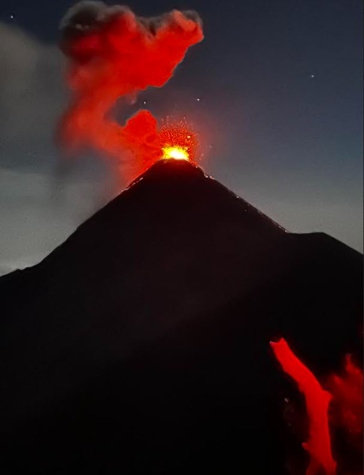
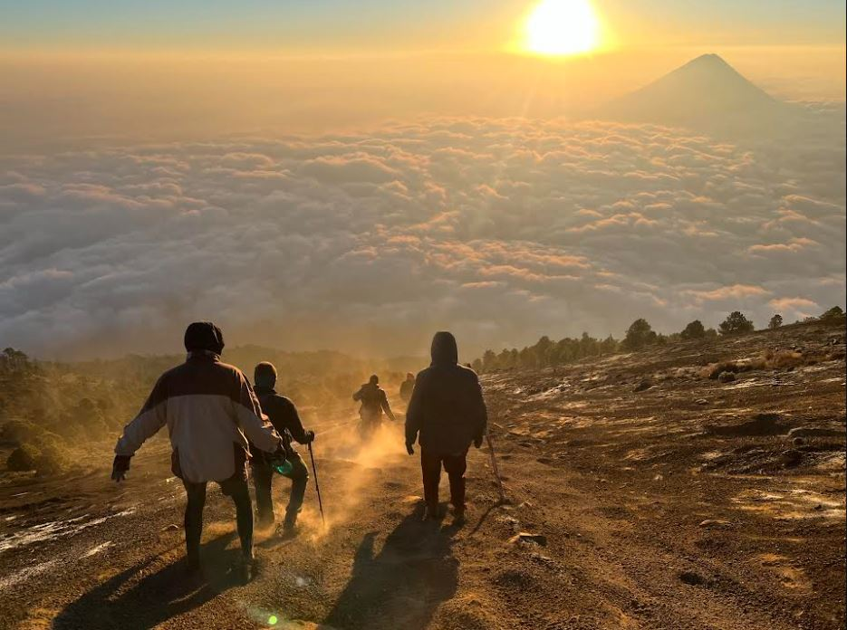
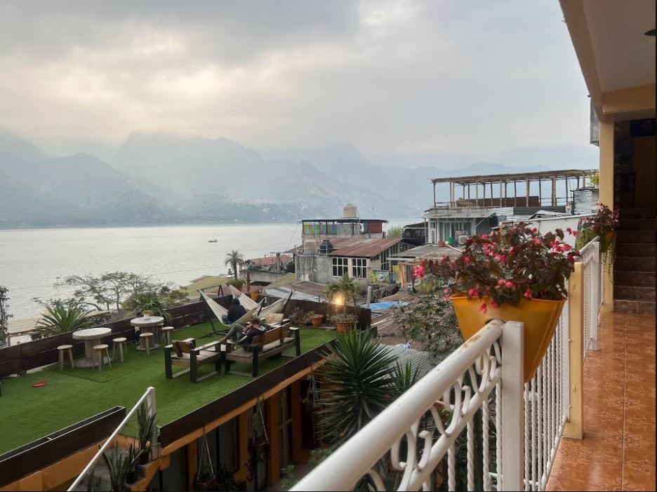
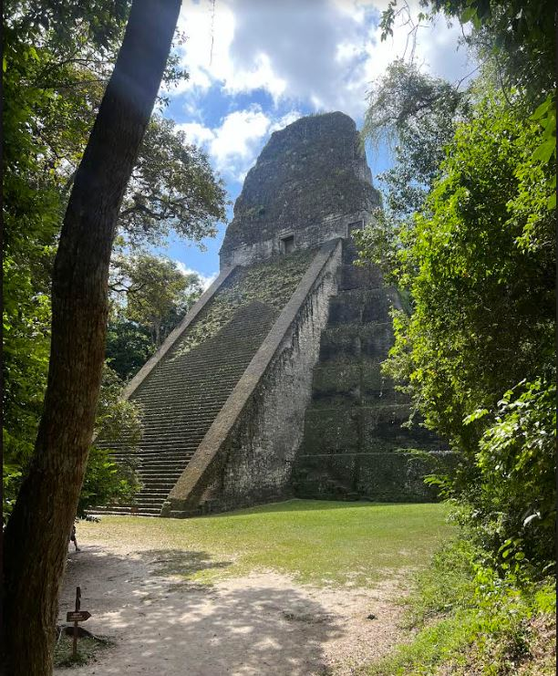
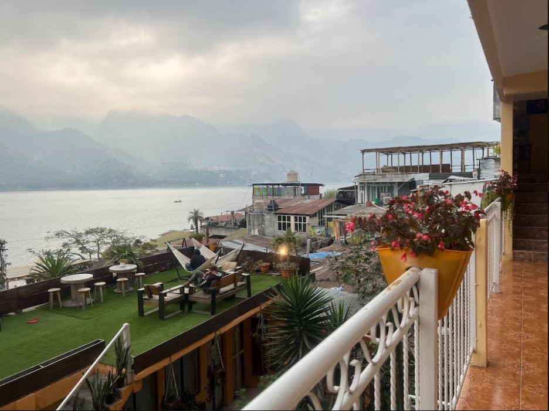
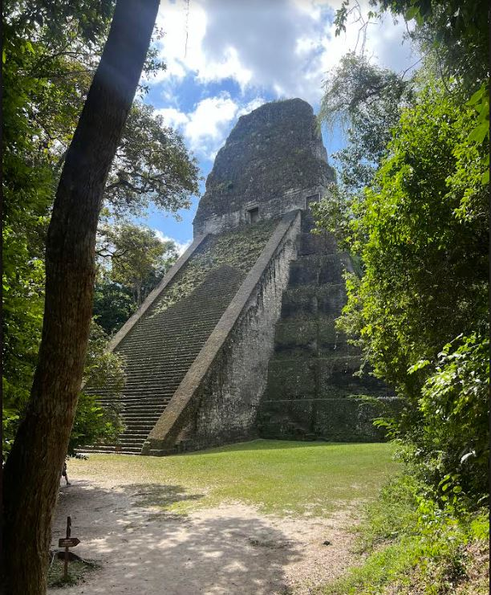

Guatemala
Buenos dias! This was a backpack packing and hostel trip in March of this year with my friend, Sam. What an adventure! We started at the north side of the country and made our way south, seeing what seemed like all the sites! We even had an overnight layover in Mexico City both directions as a bonus.



 



Top Destinations
- Volcan Acatenango
- Rio Dulce
- Tikkal
- Antigua
- Semuc Champey
- Lago Panajachel